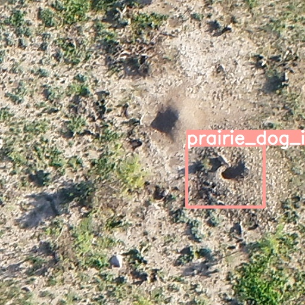

Here is the module that can detect Prairie Dogs in aerial images. We use YOLO-v5 based architecture in the backend.

.png or .jpeg image
Annotations will be added to input image
Please contact Vision Reseaech Laboratory for more details.